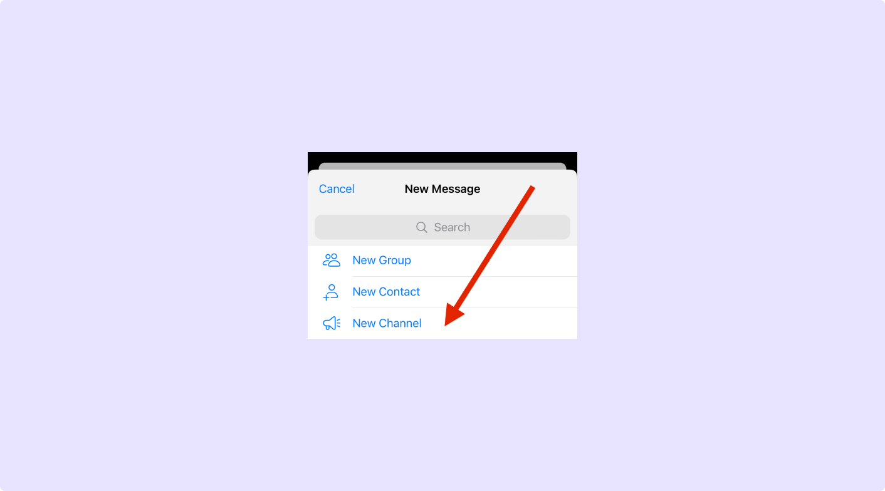
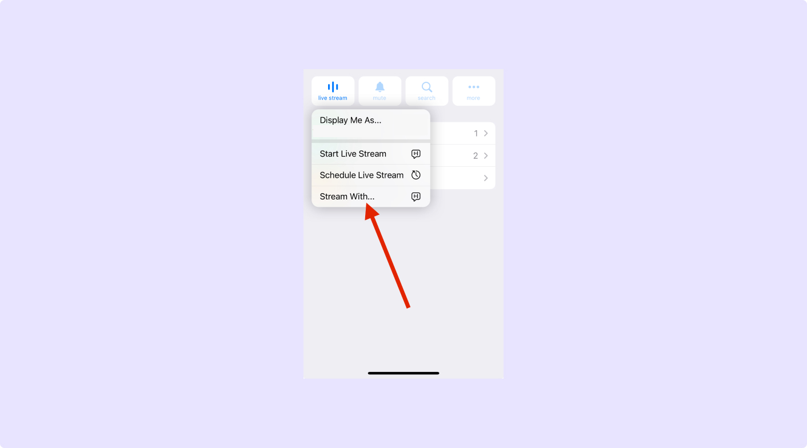
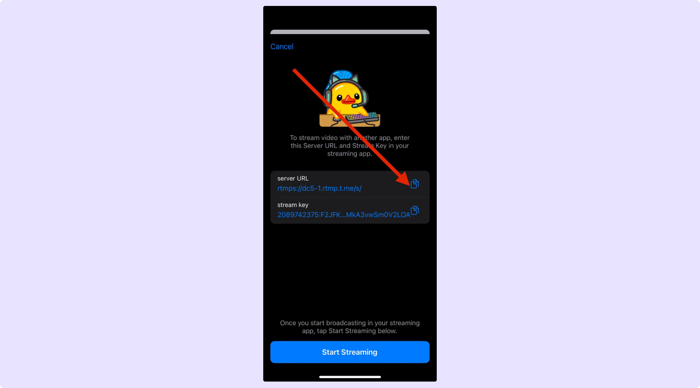
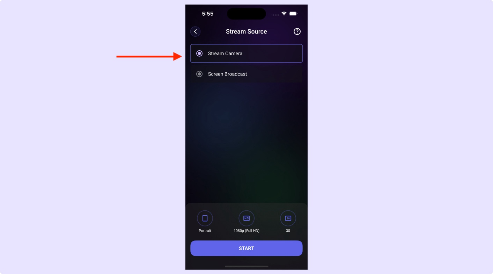
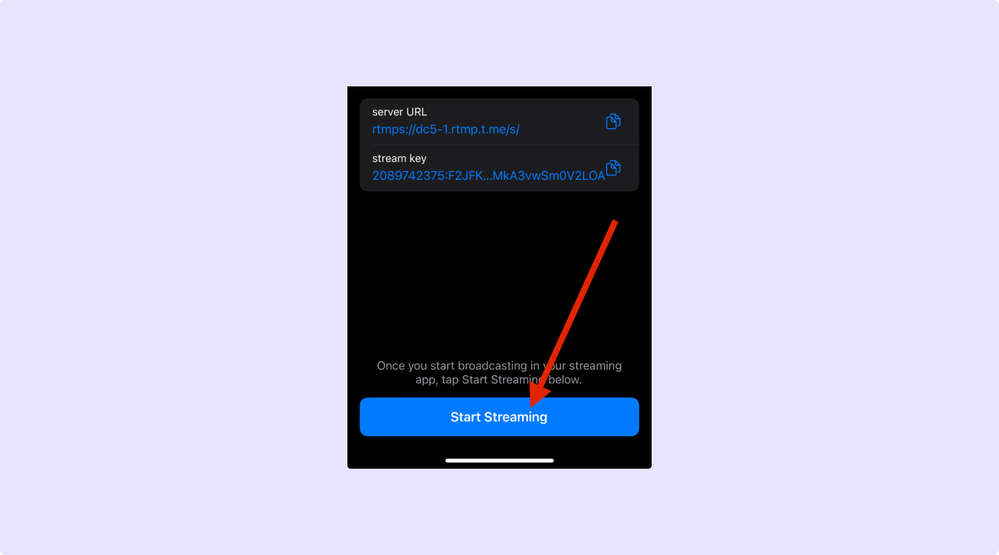

Click on the create icon to create a new Telegram channel if needed.
How to Stream Live on Telegram with Screen Recorder
Welcome to Screen Recorder, Let’s get started with a step-by-step guide to unlock your streaming potential.
Step 1: First, Click the create icon on the top right and choose to create new Telegram channel if you don’t have one

Step 2: In the channel, click the Live Stream icon and choose Stream With
Click the Live Stream icon and select the "Stream With" option.

Step 3: Copy the Server URL and Stream Key
Copy the Server URL and Stream Key from Telegram.

Step 4: Paste Server URL and Stream Key into our app
Paste the copied details into our app and proceed.

Step 5: Click Next, choose an option to go live, and click on Start
Select your streaming option and click "Start" to go live.

Step 6: Go to Telegram and click Start Streaming
Return to Telegram, click on Start Streaming, and you are live!
